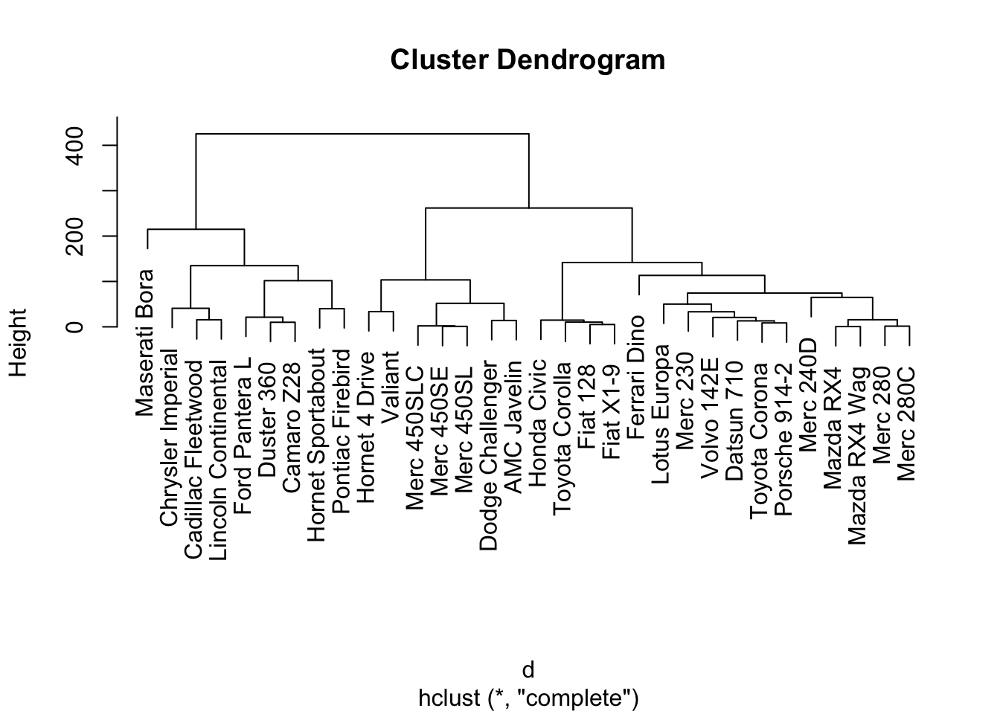

It’s quite common the case that one needs to cluster categorical variables. When it comes to clustering, a number of well known techniques abound such as k-means, k-medoids, and hierarchical clustering. With k-means and k-medoids clustering, you must have an idea of the number of clusters \(k\) desired. Furthermore, the final clusters can vary significantly depending on the number of initial clusters chosen. With hierarchical clustering, an intuitive cluster hierarchy can be observed, however computational efficiency and immediate utility is less clear. Nonetheless, the hierarhical clustering approach lends itself well to interpretation so let us consider this approach first.
d=dist(as.matrix(mtcars))
hc=hclust(d)
plot(hc)
We can further decide on an appropriate number of clusters, say 3, and observe membership.
clustercut = cutree(hc,3)
sort(clustercut)## Mazda RX4 Mazda RX4 Wag Datsun 710
## 1 1 1
## Merc 240D Merc 230 Merc 280
## 1 1 1
## Merc 280C Fiat 128 Honda Civic
## 1 1 1
## Toyota Corolla Toyota Corona Fiat X1-9
## 1 1 1
## Porsche 914-2 Lotus Europa Ferrari Dino
## 1 1 1
## Volvo 142E Hornet 4 Drive Valiant
## 1 2 2
## Merc 450SE Merc 450SL Merc 450SLC
## 2 2 2
## Dodge Challenger AMC Javelin Hornet Sportabout
## 2 2 3
## Duster 360 Cadillac Fleetwood Lincoln Continental
## 3 3 3
## Chrysler Imperial Camaro Z28 Pontiac Firebird
## 3 3 3
## Ford Pantera L Maserati Bora
## 3 3It is not always the case that cluster memberships break up so easily into evenly sized, appropriate clusters.
For this case, we will use the Markov Clustering Algorithm because this will allow us to distinguish between overlapping categories.
Stijn van Dongen, Graph Clustering by Flow Simulation, PhD thesis, University of Utrecht, May 2000. ( http://www.library.uu.nl/digiarchief/dip/diss/1895620/inhoud.htm )
For example, consider a group of movies. Movies are usually grouped under multiple genres such as drama, action, documentary, etc. This makes it tricky to truly distinguish one movie from the next. Perhaps there are more reprentative genre groupings. A sample of our incoming dataset is given here. This data comes courtesy of IMDb and is available here.
head(df[,c('movie_title','genres')])## movie_title
## 1 Avatar
## 2 Pirates of the Caribbean: At World's End
## 3 Spectre
## 4 The Dark Knight Rises
## 5 Star Wars: Episode VII - The Force Awakens
## 6 John Carter
## genres
## 1 Action|Adventure|Fantasy|Sci-Fi
## 2 Action|Adventure|Fantasy
## 3 Action|Adventure|Thriller
## 4 Action|Thriller
## 5 Documentary
## 6 Action|Adventure|Sci-FiIn order to use hierarchical clustering, we need to assign a distance value between every element and every other element. For \(n\) elements, this usually involves needing to compute \((n^2-n)/2 = n(n-1)/2\) values. In our list we have 5043 movies. So we need to do 1.27134e+07 computations. To simplify this task we will sample 100 movies, a more reasonable level.
set.seed(123)
sample_size = 100
sample_index = sample(dim(df)[1], sample_size, replace=FALSE)
df_sample = df[sample_index,]One simple measure is the Jaccard index: the intersection of sets over the union of sets.
That is, given movies \(A\) and \(B\), \[J(A,B) = \frac{|A\cap B|}{|A\cup B|}\] Where the absolute values represent the size of the sets in question. We can preallocate a vector to represent distance values.
distances = rep(0,(sample_size^2-sample_size)/2)Then we simply need to iterate over the movies in our sample set to see what the Jaccard index of any pair of movies is according to genre tags.
npairs = (sample_size^2-sample_size)/2
distances = rep(0,npairs)
movie_titlesA = rep(" ", npairs)
movie_titlesB = rep(" ", npairs)
k=0
for (i in 1:(sample_size-1)){
for (j in (i+1):sample_size){
k=k+1
A = unlist(strsplit(df_sample[i,'genres'],"[| ]"))
B = unlist(strsplit(df_sample[j,'genres'],"[| ]"))
movie_titlesA[k] = df_sample[i,'movie_title']
movie_titlesB[k] = df_sample[j,'movie_title']
distances[k]= length(intersect(A,B))/length(union(A,B))
}
}
df_out = data.frame(cbind(movie_titlesA,movie_titlesB,distances),stringsAsFactors=FALSE)
df_out = df_out[df_out$distances > 0,]After we export the dataframe to a file `
We call the mcl algorithm mcl movie_pairs.abc --abc -I 4.0. 4.0 is the extent to which we would like the algorithm to differentiate. This one parameter allows us to vary the final number of clusters we arrive at.
The Nativity Story The Holy Girl Twin Falls Idaho Chloe The Age of Adaline Queen of the Mountains Illuminata The Clan of the Cave Bear Remember the Titans Forsaken The End of the Affair Everest Courage The Crow Dracula Untold A Farewell to Arms The Celebration The Passion of the Christ All or Nothing The Express Day One Adam Solomon and Sheba The Outsiders Freeheld Mooz-Lum Evita
Cluster 1: Elysium The Scorpion King X-Men Origins: Wolverine The Mask London Has Fallen In the Valley of Elah N-Secure Airlift Grosse Pointe Blank Spider-Man 3 The Heat Ride Along Beverly Hills Cop II The Living Daylights Wing Commander 12 Rounds The Dead Undead Fast Five Desperado The Dark Knight Rises
Cluster 2: But I’m a Cheerleader Bran Nue Dae Tumbleweeds Shortbus Friday Agora Quigley Down Under Sonny with a Chance Coyote Ugly Bandits The Intern The Love Letter Of Horses and Men Cold Mountain Topsy-Turvy Annie Get Your Gun
Cluster 3: Connie and Carla Harold & Kumar Go to White Castle For Your Consideration Airplane! Monster-in-Law Team America: World Police The Big Bounce Corky Romano Supporting Characters The Wash An Alan Smithee Film: Burn Hollywood Burn Chicago
Cluster 4: The Adventurer: The Curse of the Midas Box The Secret of Kells Monty Python and the Holy Grail Chicken Little Stuart Little 2 Big Fat Liar Yogi Bear The Wild Thornberrys Movie Journey 2: The Mysterious Island The Last Legion Dragon Hunters
Cluster 5: The Call of Cthulhu The Mothman Prophecies A Nightmare on Elm Street 2: Freddy’s Revenge Premonition The Jacket Urban Legend The Visit Red Eye Thir13en Ghosts
Cluster 6: The Adjustment Bureau The Invasion Beyond the Black Rainbow
Censored Voices My Date with Drew